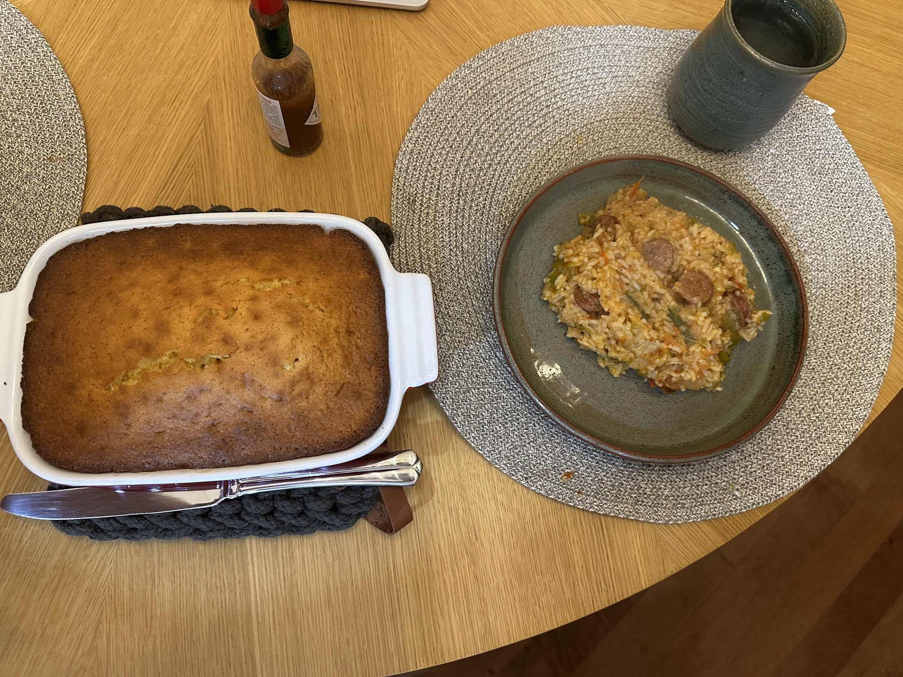

Week 1: I had covid! couldn't cook at all T-T
Week 2: I made Jambalaya! I made it once before but learned from some mistake adn it came out perfect!
Week 3: I made Sausage rolls but with PREZTEL bread. We found a pretzel bread kit and used that. ez-pz
Week 4: I made Japanese Curry after a long time. including the katsu~
i'm adding december 2024 even though this one is in the past.
On our "home christmas" we had Hot Pot! I got everything needed from hmart. its so easy with they stuff they give!! also all the dishware is made by me (Except the large meat plate)
Before we left for vacation in NJ, I made a classic: Nachos!